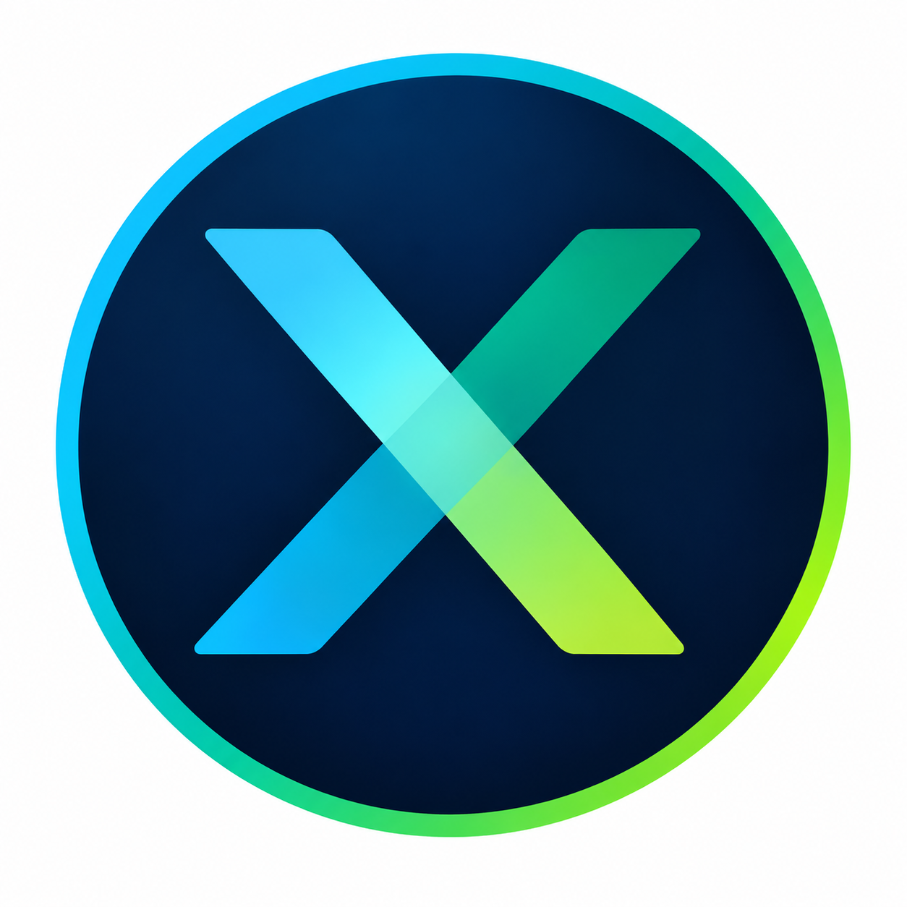

01
Workplace
Management
Arbeitsplätze, Räume und Services so orchestrieren, dass Teams produktiv und verbunden bleiben.
Mehr erfahrenDer Arbeitsplatz, neu gedacht
DEXORA verbindet Menschen, Räume und Technologie, damit Arbeit einfacher funktioniert — und Wirkung sichtbar wird.
Intelligente Lösungen
für moderne Arbeitserlebnisse.

Connect
work.
Was wir verbinden
Moderne Arbeit ist ein System aus Menschen, Orten, Daten und Entscheidungen. Wir bringen diese Perspektiven zusammen — mit Klarheit, Kompetenz und einem Blick nach vorn.
Arbeitsplätze, Räume und Services so orchestrieren, dass Teams produktiv und verbunden bleiben.
Mehr erfahrenErlebnisse schaffen, die Menschen Orientierung geben und Zusammenarbeit selbstverständlich machen.
Mehr erfahrenDaten in Entscheidungen verwandeln — intelligent, verständlich und direkt im Arbeitsalltag.
Mehr erfahrenUnsere Perspektive
Sie entsteht dort, wo Menschen sich gesehen fühlen, Räume ihren Rhythmus unterstützen und Technologie im richtigen Moment hilft.
Wir machen Komplexes verständlich und bringen den Punkt auf den Punkt.
Wir sprechen auf Augenhöhe und stellen Bedürfnisse in den Mittelpunkt.
Wir zeigen nicht nur, was möglich ist — sondern was im Alltag funktioniert.
Wir gestalten heute so, dass morgen mehr möglich wird.
Von der Idee bis zur Pipeline
Die richtigen Fragen verbinden Strategie, Aktivierung und Business Outcome. So wird aus einer Kampagnenidee ein durchgängiger Prozess — für alle.
Für wen wir arbeiten
Vom Employee Experience Team bis zur Geschäftsführung: DEXORA übersetzt Bedürfnisse in Lösungen, die weiterhelfen.
Menschen erreichen, engagieren und binden.
↗Sichere, skalierbare Lösungen integrieren.
↗Arbeitsplätze und Services effizient gestalten.
↗Effizienz steigern und Wachstum ermöglichen.
↗Webinar / Praxisbeispiel
Von der Kampagnenidee zur Pipeline mit Microsoft Copilot, AI Agents & Customer Insights Journeys.
Wie AI das Employee Experience Management verändert — am Beispiel von DEXORA, einem fiktiven B2B-SaaS-Unternehmen für moderne Workplace Experiences.
Wir begleiten DEXORA Marketing Managerin Laura durch eine vollständige Kampagne: von der ersten Idee über Planung und Aktivierung bis hin zu Leads, Opportunities und messbarer Pipeline.
Microsoft 365 Copilot und der Campaign Orchestrator Agent strukturieren die Idee in einen konkreten Kampagnenplan.
Copilot Studio Agents übernehmen Event-, Content- und Journey-Aufgaben; Customer Insights Journeys orchestriert die Aktivierung.
AI-gestützte Optimierung verbindet Touchpoints, Engagement, Leads, Opportunities und Business Outcome.
Wir möchten weniger Zeit mit manueller Arbeit verbringen — und mehr Zeit mit den richtigen Entscheidungen.
Der nächste Schritt
Erzählen Sie uns, was Sie bewegt. Wir bringen die richtigen Menschen, Ideen und nächsten Schritte zusammen.